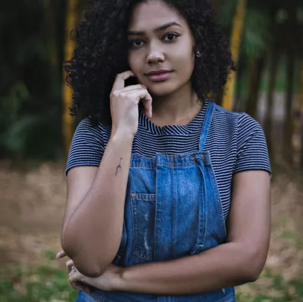

Un portrait n’est pas une ressemblance. Dès lors qu’une émotion ou qu’un fait est traduit en photo, il cesse d’être un fait pour devenir une opinion. L’inexactitude n’existe pas en photographie. Toutes les photos sont exactes. Aucune d’elles n’est la vérité.

À propos de moi
Devenir photographe était pour moi une évidence. Comme si j’y étais prédestinée. Saisir un moment, une émotion, une situation, un endroit, une lumière et les rendre immortels, voilà ce qui me fait vibrer.
Nous passons notre vie à chercher le bonheur, et lorsque nous y touchons, nous n’avons qu’une envie : le figer au travers de photographies pour le savourer avec les personnes qui sont importantes à nos yeux, ou le partager avec plus grand nombre. C’est ce que je vous propose : saisir ces merveilleux moments au travers de mon regard, mon approche, ma technique. Rendre ces moments immortels, afin que vous puissiez y puiser de l’amour, du bonheur, de la tendresse et de la lumière à chaque fois que vous poserez les yeux sur vos photos.
Portfolio
Mes services
Shooting photo
Pour capturer vos moments les plus précieux et garder un souvenir impérissable. Je me déplace en Île-de-France pour réaliser vos photos.
350€/demi journée
Matériel, déplacement inclusRetouches photo
Vous souhaitez retoucher vos photos pour un résultat professionnel ? Bénéficiez d’un rendu optimal pour vos publications.
50€/photo
2 AR par photoAlbum photos
Partagez avec vos proches et vos clients les photos des moments partagés ensemble à travers un album photo personnalisé.
400€ album A4
30 pages recto/versoDe manière inconsciente, je crois, je guette un regard, une expression, des traits ou une nostalgie capable de résumer ou plus exactement de révéler une vie.